Each case: the world model plans a pick-and-carry to a target (on the ground, in the air, or on top of furniture) with an obstacle in the way (the obstacle enters the objective as its bounding box with a clearance buffer — 40 mm for carry-over cases, 3 mm when the object is to rest on it — weight 5–10; Adam lr 0.1, 40 iterations, shell on, population 4). The plan's hand trajectory is then executed in Isaac Lab by a controller-driven fixed-base Franka (differential IK into PD joint drives with velocity feedforward, binary gripper), with the obstacle present as an immovable convex-hull collider built from the same asset. Frames are rendered offline from the simulated poses with the objects' own textured meshes (fitted to the frame-0 particles), the obstacle asset, and a dark-green X on the table at the target; the start | end image carries the smoothed path of the object's centroid. Pickup-only checkpoint throughout.
Target = start + (30 cm x, 0, +19.6 cm): the centroid height of the carton standing on the cabinet's top face (libero wooden_cabinet 0170, 19.6 × 22.8 × 19.6 cm, placed under the target). Planning: 40 iterations, shell on, cabinet box weight 5 with a 3 mm margin (the carton must come to rest on it). Generation: all four members reach the top-face target (3.7 / 3.9 / 13.6 / 11.0 mm). Isaac, commanded arm, cabinet as an immovable collider: member m3 shown — peak lift 326 mm, carton reaches the cabinet top at frame 54 (video and path cut there); it arrives already tilted 46° and, as the arm keeps moving, ends lying at 71°, 47 mm from the target point (the plan itself ends at 106°); arm tracking 1.7 / 3.7 mm; m1 the same (47 mm). See the upright-term case below. The planner's own pick m0 slipped out of the gripper at lift-off in the arm replay (it succeeds with the floating hand, 37 mm), so this is not the planner-view member.
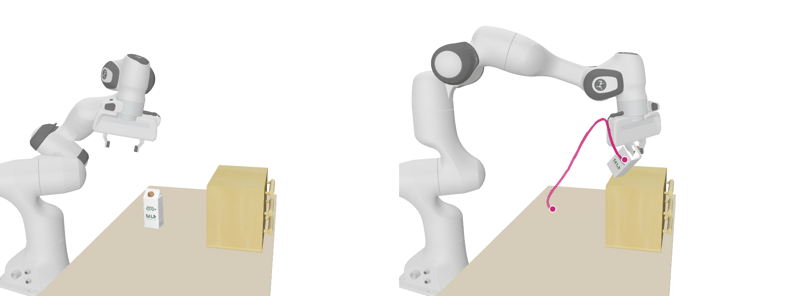
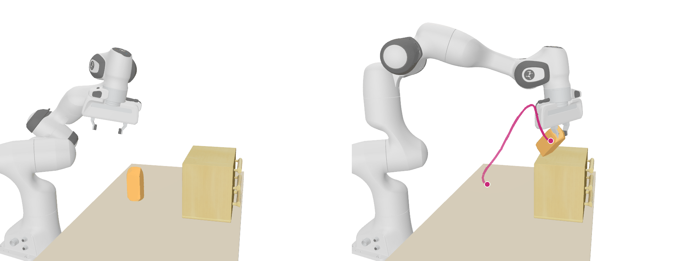
Same task and settings as the cabinet case above plus an upright term: the tilt of the carton's frame-0 vertical axis (Kabsch rotation of its particles, differentiable), averaged over the last 5 frames, weighted 0.3 m per radian. Generation, final tilt per member: 84° / 101° / 12° / 106° without the term → 1.9° / 4.1° / 3.5° / 0.7° with it (goal distances 12.5 / 41.8 / 72.3 / 73.6 mm; planner pick m3). Isaac, commanded arm, cabinet collider, member m3: carton reaches the cabinet top at frame 51 (video and path cut there) tilted 15°, standing; as the arm keeps pressing after contact it settles at 26° by frame 60, 71 mm from the target point (+199 mm up). Without the term: 46° at contact, 71° at the end. Arm tracking 5.2 / 40 mm, the deviation during that post-contact push (frames 52–58).
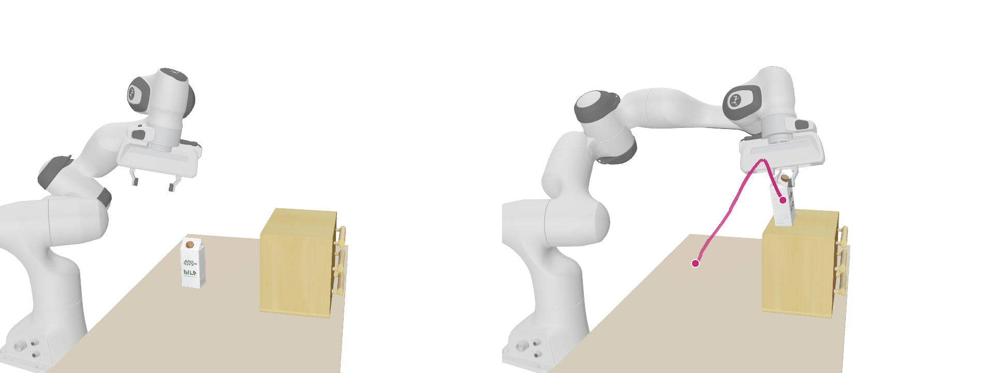
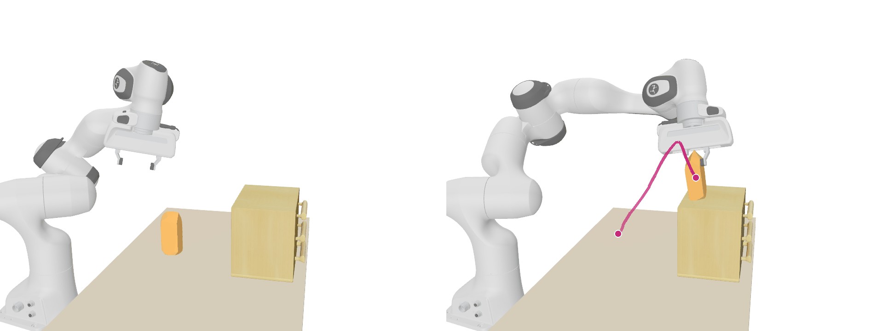
Same cabinet and upright term, but the cabinet stands 30 cm to the carton's side (+y): target = start + (0, 30 cm, +19.6 cm). Generation: 57 / 61 / 11 / 160 mm; planner pick m2. Isaac, commanded arm, cabinet collider: carton carried sideways and set on the cabinet top (+191 mm), 7.9° tilt at first contact (frame 57, where the video and path stop); as the arm keeps executing it settles at 40° and 116 mm from the target point by frame 60. Arm tracking 4.3 / 45 mm (the deviation at set-down). Camera from the far side of the robot, looking back at it, so the arm partly covers the carton mid-carry.
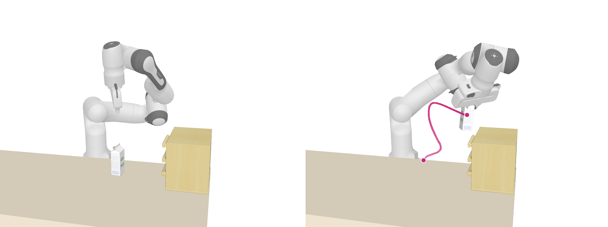
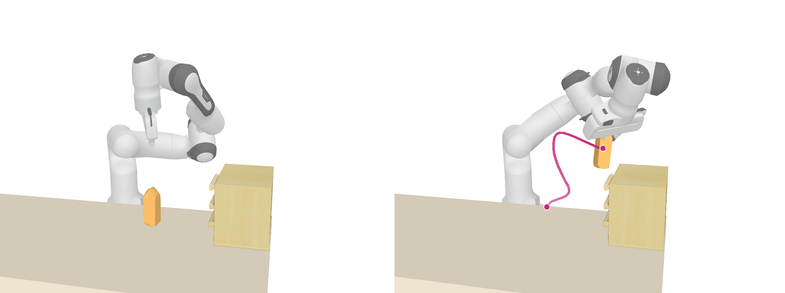
Obstacle: three stacks of three books lying flat (libero book 0004 × 9, each offset and yawed a little), 39.7 cm long, 14.9 cm deep, 10.6 cm high, midway. Target = start + (30 cm x, +4 cm y) on the ground. Planning: 40 iterations, shell on, book-row box weight 10 with a 40 mm buffer. Generation: 41 / 33 / 324 / 60 mm; planner pick m1 (33 mm), whose closest approach to the box in the plan is 41 mm. Isaac, commanded arm, nine book hulls as immovable colliders: carton carried over (peak 233 mm), set down 45 mm from the target, resting 28 mm above its start height against the landing; arm tracking 4.3 / 47 mm (the deviation is at the set-down, frames 52–55). Floating hand on the same member: 43 mm.
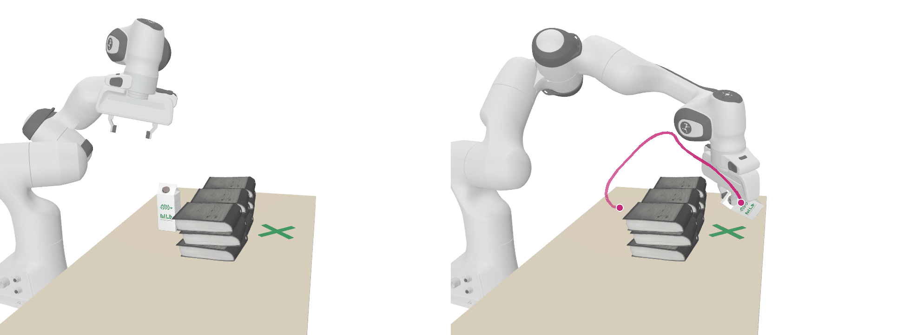
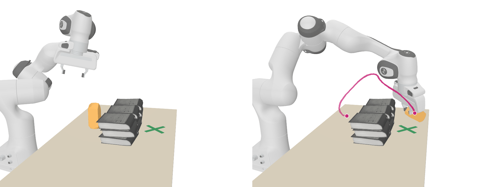
Plans that reach their target in generation but whose pick does not transfer to Isaac. Shown as rendered; each with its numbers.
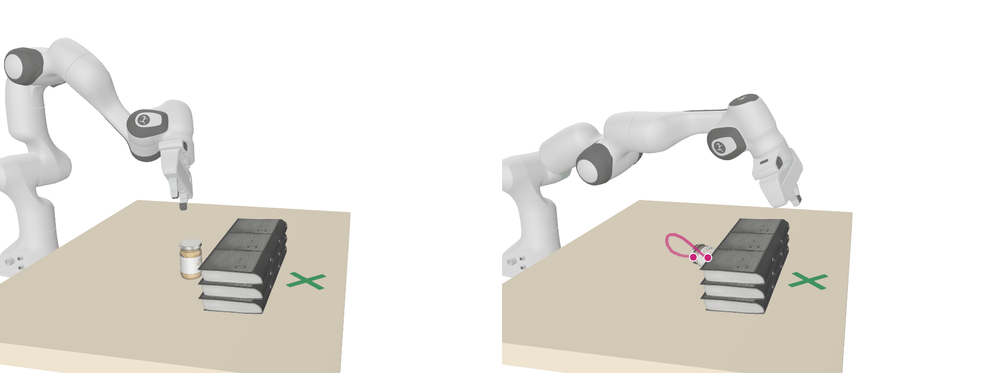
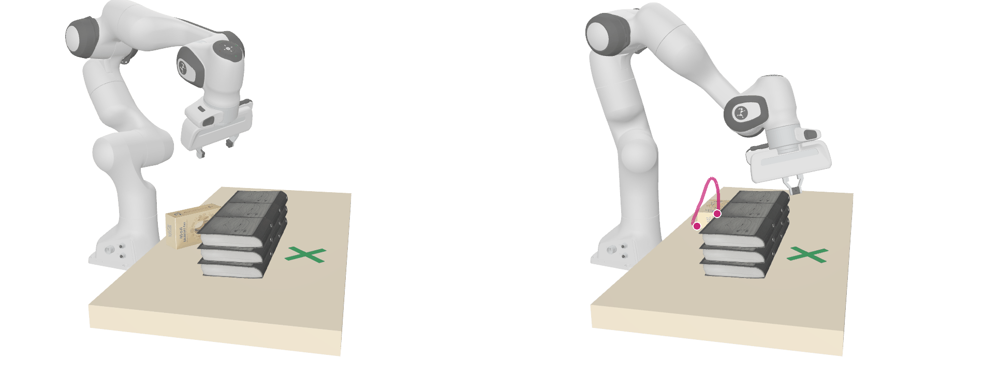
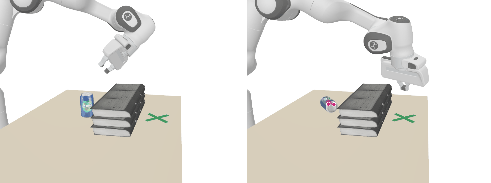
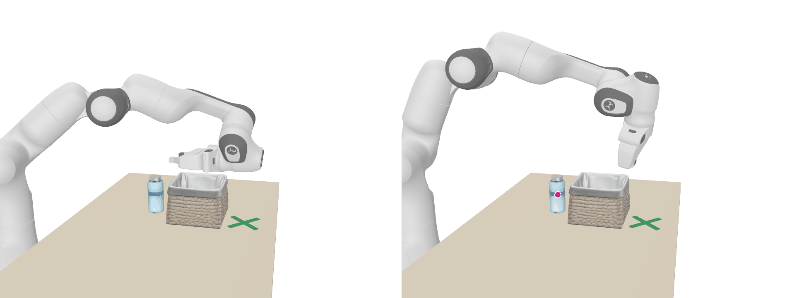
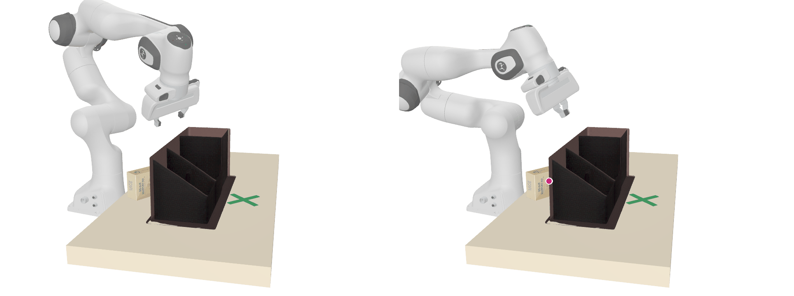
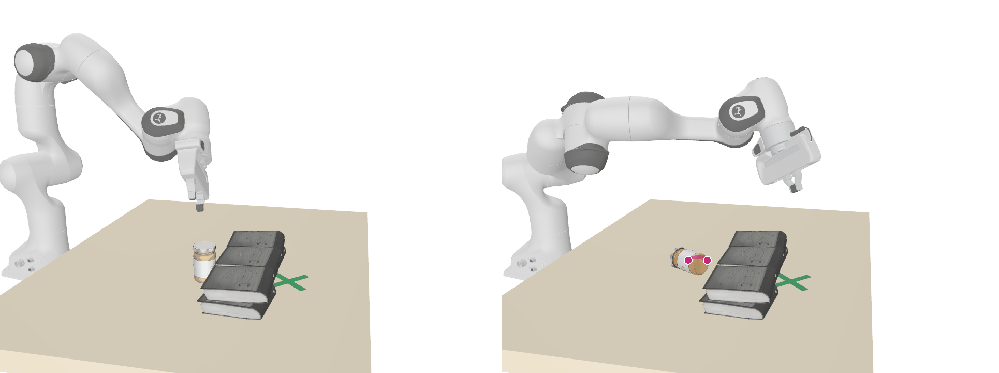
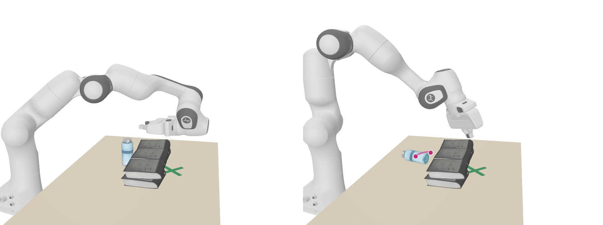
Every case, both variants; same four windows per object. The arm videos above replay the member with the lowest final objective.
| case | unguided m0..m3 | guided m0..m3 |
|---|---|---|
| water bottle over basket (air) | 274 (278) 258 (266) 336 (311) 320 (339) | 0 (239) 4 (247) 1 (234) 4 (312) |
| soda can over books | 14 (269) 11 (280) 612 (607) 116 (338) | 9 (289) 327 (343) 0 (306) 3 (289) |
| carton on cabinet | 248 (257) 266 (287) 357 (324) 262 (285) | 327 (336) 307 (327) 384 (348) 326 (354) |
| carton on cabinet, to the side | 252 (260) 270 (289) 353 (322) 261 (285) | 6 (240) 7 (275) 247 (245) 4 (264) |
| carton on cabinet, upright term | 249 (256) 266 (289) 354 (322) 262 (284) | 334 (331) 298 (310) 329 (317) 298 (320) |
| carton over book row | 245 (252) 270 (290) 359 (324) 259 (284) | 259 (263) 231 (248) 250 (246) 302 (315) |
| jar over book row (air) | 364 (391) 292 (320) 4 (393) 385 (407) | 341 (364) 1 (419) 3 (238) 23 (371) |
| jar over low books (air) | 360 (386) 289 (317) 403 (392) 388 (410) | 2 (388) 0 (354) 6 (361) 0 (372) |
| pasta box over books | 825 (813) 708 (699) 634 (621) 874 (867) | 279 (249) 215 (234) 5 (275) 323 (332) |
| pasta box over caddy | 829 (818) 705 (697) 648 (655) 878 (869) | 18 (187) 36 (20) 5 (304) 6 (353) |
| water bottle over low books (air) | 270 (275) 260 (269) 338 (312) 320 (338) | 233 (257) 2 (259) 3 (292) 3 (284) |
target +25 cm x on the ground; obstacle tea_box 0001 (6.6 × 7.1 × 12.0 cm). Generation: best member ends 197 mm from the target (all four 197–211 mm; unguided 416–491). Isaac (commanded arm): the jar is never lifted (peak 10 mm), gets knocked over and ends 26 mm below its start height; arm tracking 1.0 / 2.4 mm. Shown for the rendering pipeline: real jar and tea-box meshes, tea box as a physical obstacle.
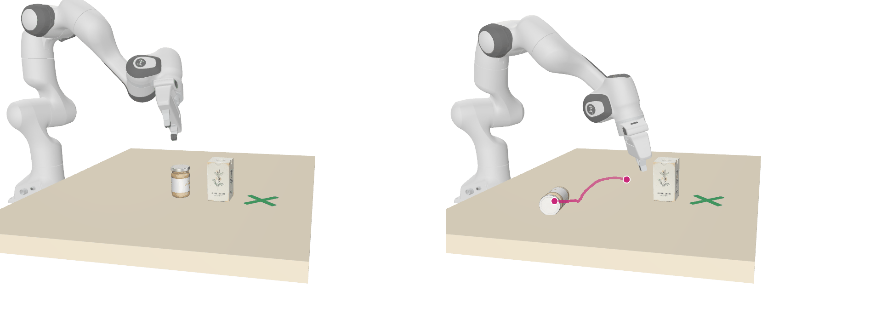